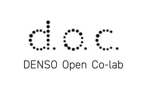

Trade Mark Journal No.2025/016 18 April 2025
UK00004166448 27 February 2025 (35,38,41)

- Class 35
- Planning and conducting of trade fairs, exhibitions and presentations for commercial or advertising purposes; business management; marketing research or analysis.
- Class 38
- Providing online virtual reality-based forums for work collaboration; providing internet chatrooms; providing online forums; videoconferencing services; electronic bulletin board services [telecommunications services]; rental of access time to global computer networks; computer aided transmission of messages and images; streaming of data; providing access to databases; transmission of digital files; video-on-demand transmission; telecommunication.
- Class 41
- Arranging, conducting and organization of seminars; arranging, conducting and organization of online seminars; arranging, conducting and organization of conferences; arranging, conducting and organization of online conferences; arranging, conducting and organization of congresses; arranging, conducting and organization of online congresses; arranging, conducting and organization of in-person educational forums; arranging, conducting and organization of online in-person educational forums; arranging, conducting and organization of workshops [training]; arranging, conducting and organization of online workshops [training]; arranging, conducting and organization of symposiums; arranging, conducting and organization of online symposiums; arranging, conducting and organization of colloquiums; arranging, conducting and organization of online colloquiums; arranging, conducting and organization of social gatherings; arranging, conducting and organization of online social gatherings; arranging, conducting and organization of poster sessions; arranging, conducting and organization of online poster sessions; providing electronic publications; providing online electronic publications, not downloadable; multimedia library services; providing videos from the internet, not downloadable; providing online videos, not downloadable; providing online images, not downloadable; providing digital music from the Internet, not downloadable; providing online music, not downloadable; production of videotape film in the field of education, culture, entertainment or sports [not for movies or television programs and not for advertising or publicity]; organization of entertainment events excluding movies, shows, plays, musical performances, sports, horse races, bicycle races, boat races and auto races; arranging and conducting of entertainment events; arranging and conducting of online entertainment events; providing facilities for movies, shows, plays, music or educational training; dubbing and editing of audio and video recordings; video editing services for events; organization of exhibitions for cultural or educational purposes; organization of online exhibitions for cultural or educational purposes; entertainment services; educational and instruction services relating to arts, crafts, sports or general knowledge; teaching; educational services; instruction services; know-how transfer [training]; transfer of business knowledge and know-how [training].
KABUSHIKI KAISHA DENSO (DENSO CORPORATION)
Representative: J A Kemp LLP